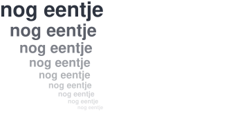

Ik lig in bed en pak mijn telefoon, alleen even om mijn wekker te zetten, en dan zie ik de meldingen die ik door Niet storen heb gemist, op eentje moet ik nog reageren, en als ik dat gedaan heb staat TikTok al open en kijk ik nog eentje en nog eentje en nog eentje, tot mijn ogen pijn doen en ik op de klok kijk en zie dat ik anderhalf uur verder ben, met een hoofd dat nog vol zit, zodat ik moe ga slapen en elke dag weer moe wakker word.

Dat is geen toeval. Apps als TikTok en Instagram zijn gebouwd om je aandacht zo lang mogelijk vast te houden. Tristan Harris, die als ontwerper bij Google werkte, zegt het zo: wie het menu bepaalt, bepaalt de keuzes. Je denkt dat je alles ziet, maar je ziet wat het bedrijf voor je klaarzet. TikTok legt zelf uit dat wat je liket, deelt en volgt bepaalt wat je te zien krijgt, en ook wat je opzoekt telt mee. Ik zocht één keer een boksmove op om naar een vriend te sturen, en de dagen erna kreeg ik alleen nog boksvideo's. TikTok zegt dat het variatie toevoegt om een bubbel te voorkomen. Ik merkte daar weinig van. En zelfs als ik niet scrol, trekt een melding aan me. Onderzoek uit 2015 laat zien dat alleen al een melding je concentratie verstoort, ook als je je telefoon niet aanraakt.
Mijn broertje Efe is 18. Hij zit veel op TikTok en Instagram, en zijn feed staat vol games. Hij vindt dat fijn, en dat snap ik. Ik vind het algoritme zelf soms ook fijn. Maar ik denk niet dat hij doorheeft hoe het hem stuurt. En misschien jij ook niet. Weet jij nog wanneer je voor het laatst zelf koos wat je zag? Of denk je dat je kiest, terwijl het systeem eigenlijk kiest?
Soms besef ik het midden in het scrollen, en leg ik mijn telefoon weg.
Maar vaak heb ik het helemaal niet door.
Dan stop ik pas als mijn ogen pijn doen.
Niet omdat ik dat kies, maar omdat ik niet verder kan kijken.
Pas als ik daarna stil lig, besef ik: ik zat er weer veel te lang op.
De filosoof Joke Hermsen zegt dat rust komt voordat je kritisch kunt nadenken. Zo gaat het bij mij ook. Eerst moet ik stil liggen, pas dan zie ik wat er gebeurde.
Daarom sta ik voor een web met ruimte om even stil te staan, zodat je weer zelf kiest wat je ziet.
Het algoritme hoeft niet weg. Het laat je dingen zien die je boeien.
Maar we moeten zelf kunnen kiezen.
Een feed moet kunnen ophouden, in plaats van eindeloos door te gaan.
De knoppen om aan te geven wat je niet wil zien, moeten echt werken.
En we moeten makkelijk een tijdlijn kunnen kiezen die niet op ons is afgestemd, bijvoorbeeld een tijdlijn waarin je gewoon ziet wat er als laatste is geplaatst.
Dat laatste is in Europa al de wet. Zeer grote platforms moeten je die keuze geven. Toch zette Meta die keuze steeds terug naar de feed die wel op jou is afgestemd, tot Bits of Freedom naar de rechter stapte en gelijk kreeg.
Wie is er verantwoordelijk? Volgens mij is het een mix. De bedrijven bouwen de apps. De overheid kan regels maken die ons een keuze geven. En ik kan zelf bepalen hoe ik ermee omga, al lukt dat niet altijd.
Wat kunnen we zelf doen? Eén ding, voor het slapen. Zet je wekker voordat je in bed gaat liggen, en leg je telefoon daarna zo ver mogelijk weg, het liefst in een andere kamer, en anders uit je zicht en bereik, met het geluid uit. Dan pak je hem in bed niet meer op, en kom je ook niet bij je meldingen. Het RIVM zag dat jongeren die in het uur voor het slapen een scherm gebruiken, vaker slaapklachten hebben. Toen jongeren in een experiment een week ’s avonds geen scherm gebruikten, werden die klachten minder. Het RIVM noemt bewust zijn van je gebruik belangrijk.
Toen ik laatst met Efe en zijn vrienden ’s avonds buiten ging boksen, zat niemand op zijn telefoon.
We waren er helemaal bij.
Dat is wat je terugkrijgt.
Je hoeft het alleen door te hebben. Dat dacht ik lang. Maar ik merk dat het meer vraagt. Ik heb het door, ik leg mijn telefoon weg, en toch verzin ik een smoesje en pak ik hem weer.
Het begint met doorhebben, al is het niet het hele antwoord.
Zodra je doorhebt dat je gestuurd wordt, kies je weer een beetje zelf.